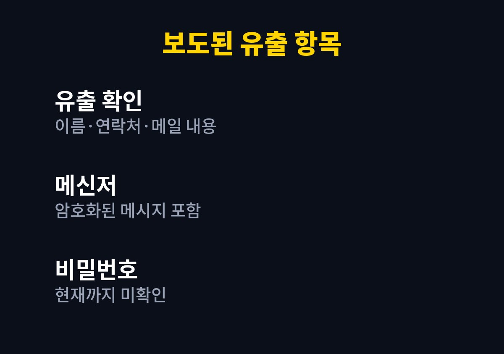
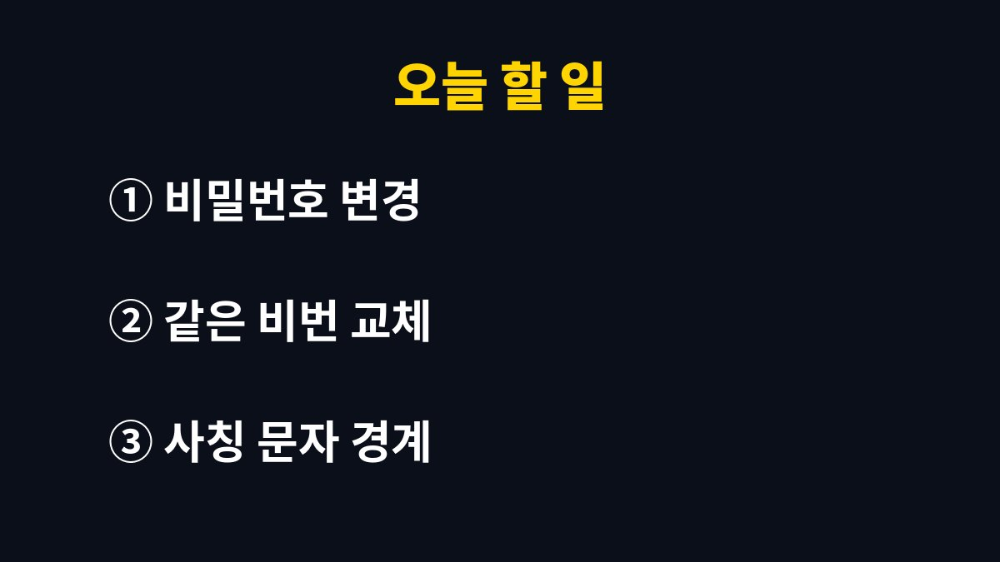

카카오워크 개인정보 유출 사고에서 보도로 확인된 항목은 이름·휴대전화번호·이메일 주소와 업무 메일 본문·첨부파일까지이고, 비밀번호 유출은 현재까지 확인되지 않았다.
사고는 11월 9일에 일어났고 11월 12일에 공지됐으며, 외부 공격자가 서비스 공급사 디케이테크인의 시스템에 비정상적으로 접근한 것으로 보도됐다.
이 서비스를 업무에 쓰는 사람은 비밀번호 변경과 사칭 문자 경계, 두 가지를 먼저 해 두면 된다.
사고가 일어난 날은 11월 9일이다.
디케이테크인과 카카오엔터프라이즈가 사고 사실을 공지한 날은 11월 12일이다.
언론 보도는 11월 13일에 나왔다.
내부에서 침입을 처음 알아챈 정확한 날짜는 보도에 나와 있지 않다.
그래서 사고와 공지 사이에 실제로 며칠이 비어 있었는지는 알 수 없고, 알려진 것은 사고일과 공지일의 간격뿐이다.
공지가 나오기 전 사흘 동안 계정 정보가 어떻게 쓰였는지는 누구도 확인해 주지 않았다.
그래서 11월 9일 이후 받은 낯선 문자와 메일은 한 번 더 의심해 볼 만하다.
카카오는 11월 1일에 카카오워크의 소유권과 관련 개인정보를 이전받아 운영 주체가 됐다.
사고는 이 운영 구조 변경 직후에 일어났다.
디케이테크인은 지금도 라이선스 공급과 관련한 업무를 맡고 있다.
구조 변경이 사고에 영향을 줬는지는 보도에서 확인되지 않으므로 연결해서 단정하지 않는다.
이 변화가 이용자에게 달라지는 점은, 문의 창구가 카카오엔터프라이즈와 디케이테크인 두 곳으로 나뉘어 보일 수 있다는 것이다.
안내문을 받으면 발신 주소와 도메인부터 확인하고 공식 공지 채널과 대조한다.
유출 범위는 사람마다 다르다고 보도됐다.
아래 표는 보도에 적힌 항목을 그대로 나눈 것이다.
업무용 서비스라서 대화의 성격이 개인 메신저와 다르고, 첨부파일 안에 계약서나 견적서가 들어 있었다면 영향이 더 커진다.
| 항목 | 보도 내용 | 비고 |
|---|---|---|
| 이름·닉네임·소속 부서 | 포함 | 개인별로 범위가 다르다 |
| 휴대전화번호·이메일 주소 | 포함 | 연락처 기반 사칭에 쓰일 수 있다 |
| 이메일 제목·본문 | 포함 | 업무 내용이 담긴 경우가 있다 |
| 첨부파일명·첨부파일 원본 | 포함 | 파일 내용까지 해당한다 |
| 메신저 메시지 | 암호화된 상태로 포함 | 첨부파일명도 포함 |
| 비밀번호 | 현재까지 확인되지 않음 | 조사가 진행 중이다 |

피해 대상은 전·현직 임직원, 회사 계정을 이용한 외부 인원, 일부 이메일 수신자로 보도됐다.
직접 메일을 보낸 적이 없어도 수신자 쪽에서 범위에 들어갔을 수 있다는 뜻이다.
수신자는 자기 메일함에 남은 내용이 아니라 보낸 쪽 계정에 저장된 내용 때문에 영향을 받을 수 있다.
이 부분은 보도에 구체적 설명이 없어서 회사 안내를 기다려야 한다.
피해를 본 기업 수와 인원은 확정되지 않았다.
침투 경로, 악용된 취약점, 공격 방식도 보도에 나오지 않는다.
추가 유출이 있었는지는 카카오엔터프라이즈가 디케이테크인과 함께 조사하고 있다.
피해 범위가 확인되면 관련 이용자에게 개별 안내하겠다는 것이 회사의 방침이다.
신고가 접수됐다는 사실과 제재가 결정됐다는 사실은 전혀 다른 단계라서, 지금은 앞 단계에 있다고 보면 된다.
회사 안내가 오기 전까지는 보도에 나온 항목을 기준으로 대비하고, 새 사실이 나오면 그때 보완한다.
디케이테크인은 한국인터넷진흥원과 개인정보보호위원회에 사고를 신고했다.
개인정보보호위원회는 신고를 접수해 내용을 검토하고 있다고 한다.
조사 결과나 제재 여부는 아직 나오지 않았다.
비밀번호가 유출되지 않았다는 말은 현재까지 확인되지 않았다는 수준이며, 안전이 보장됐다는 뜻은 아니다.
보도 시점 이후 수정된 내용이 있을 수 있어 최신 공지를 다시 보는 편이 안전하다.
가령 카카오워크 계정 확인이 필요하다는 문자가 링크와 함께 도착하는 장면이 가장 흔한 사칭 수법이다.
링크를 누르지 않고 앱을 직접 열어 알림을 확인하면 된다.
유출된 연락처가 사칭 문자에 쓰일 수 있어서 이 습관이 가장 빨리 효과를 낸다.
카카오워크 비밀번호만 바꾸고 업무용 이메일 비밀번호를 그대로 두면 절반만 막은 셈이다.
유출 항목에 이메일 본문과 첨부파일이 들어 있어서, 메일 계정이 뚫리면 피해가 이어질 수 있다.
새 비밀번호는 다른 서비스에서 쓰던 것과 겹치지 않게 정한다.
회사가 단일 로그인으로 계정을 관리한다면 변경 방법을 보안 담당자에게 먼저 물어야 한다.
개인 휴대전화로 업무 알림을 받고 있다면 알림 미리보기에 뜨는 내용도 한 번 훑어 둔다.
회사 계정과 개인 계정을 섞어 쓰는 사람은 이 기회에 로그인 기록을 한 번 보는 것도 방법이다.
의심스러운 접속 기록이 있으면 캡처해서 보안 담당자에게 넘기면 조사에 쓸 수 있다.

이번 보도의 대상은 업무용 협업 서비스 카카오워크이며, 개인 메신저 대화가 유출됐다는 내용은 아니다.
다음에 확인할 것은 카카오엔터프라이즈의 개별 안내와 회사 보안 담당자의 공지다.
조사 결과가 나오면 유출 항목이 보도와 달라질 수 있어서, 그때 안내문을 한 번 더 읽어 보면 된다.
사고가 난 뒤 계정 보안 설정을 확인해 두면 다음 사고에서도 피해를 줄일 수 있다.
가능하면 2단계 인증이 켜져 있는지 확인하고, 꺼져 있다면 회사 정책에 맞춰 켠다.
※ 2026년 기준 공식 안내를 바탕으로 정리한 글이며, 기기·앱 버전에 따라 메뉴 이름이 다를 수 있다.